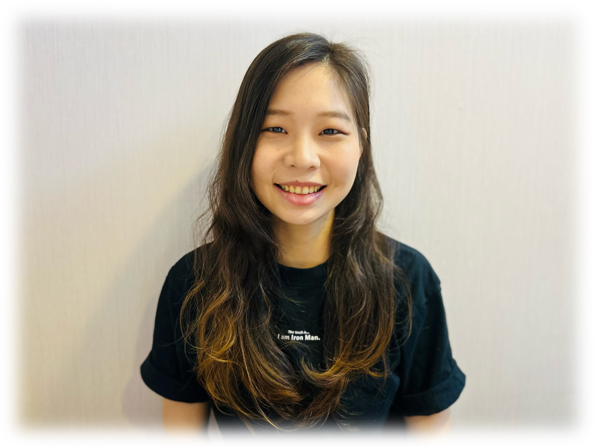

<div class="page">
  <div class="main-area">
    <div class="area profile-area">
      <div class="title">
        <div class="title-text" #title>ABOUT ME<span #subtitle></span></div>
        <div class="line"></div>
      </div>

      <div class="content-area scrollbar" #scrollElement (scroll)="onScroll()">
        <div class="self-intro" scrollInView [isContinuous]="true">
          <div class="intro-text">
            Hi, my name is <span class="noto">Jessie</span>. I’m a passionate
            <span class="noto">Full Stack Software Developer</span>
            having experience of building Web and
            Mobile applications.
            <br><br>
            I have had the privilege of working at a
            <span class="noto">software company</span>, <span class="noto">a start-up</span>, and <span class="noto">a
              large commercial bank</span>.
            <br><br>
            Feel free to take a look at some of <span class="noto link" (click)="navigate('works')">my works.</span>
            <br><br>
            I'm currently a graduate student in UC Irvine and my main focus is Embedded & Cyber-Physical Systems.
            <br><br>
            When I’m not at the computer, I’m usually learning languages and traveling. I enjoy meeting people from
            different countries and experience the cultures.
            I can speak Chinese, English, Korean, and Japanese.
          </div>
          <div #skills class="area">
            <div class="area-title">SKILLS</div>
            <div class="skills-list">
              <div class="skill-card">
                <div class="skill-icon"><i class="fas fa-code fa-2x"></i></div>
                <div class="skill-card-title">JavaScript/TypeScript, CSS/SCSS, HTML</div>
                <div class="skill-desc">
                  With a combined 7 years of experience from personal projects and works from Galaxy, Ardomus,and CUB.
                </div>
              </div>
              <div class="skill-card">
                <div class="skill-icon"><i class="fa-brands fa-angular"></i></div>
                <div class="skill-card-title">Angular</div>
                <div class="skill-desc">
                  With a combined 5 years of experience from personal projects and works from Ardomus,and CUB.
                </div>
              </div>
              <div class="skill-card">
                <div class="skill-icon"><i class="c-sharp">C&nbsp;</i></div>
                <div class="skill-card-title">C#, .NET Core</div>
                <div class="skill-desc">
                  I have over 3 years of experience programming in C#. Projects include a official document management
                  system using .NET Core, and many other personal projects.
                </div>
              </div>
              <div class="skill-card">
                <div class="skill-icon"><i class="fa-brands fa-python"></i></div>
                <div class="skill-card-title">Python</div>
                <div class="skill-desc">
                  I've had extensive experience with Python in the course of my research, classwork, and personal
                  projects. Some of my research in Python include a recommendation system by using Flask and LibSVM.
                </div>
              </div>
              <div class="skill-card">
                <div class="skill-icon"><i class="c-plusplus">C&nbsp;&nbsp;</i></div>
                <div class="skill-card-title">C++</div>
                <div class="skill-desc">
                  I've had extensive experience with Python in the course of my research, classwork, and personal
                  projects. Some of my research in Python include a recommendation system by using Flask and LibSVM.
                </div>
              </div>
              <div class="skill-card">
                <div class="skill-icon"><i class="fas fa-database"></i></div>
                <div class="skill-card-title">T-SQL, MSSQL</div>
                <div class="skill-desc">
                  During the past three year, I've had extensive experience with MSSQL. The projects include building an
                  Official Document System, maintaining HR Databases, and Lucky Draw Systems.
                </div>
              </div>
            </div>
          </div>

          <div #education class="area">
            <div class="area-title">EDUCATION</div>
            <div class="edu-block">
              <div class="edu-photo">
                
              </div>
              <div class="edu-list">
                <div class="edu-timeline"></div>
                <div class="edu-desc">
                  <div class="edu-year">2023 - 2024 <span class="expected">(Expected)</span></div>
                  <div class="edu-pin current">
                    <i class="fa-regular fa-circle-dot fa-xl"></i>
                  </div>
                  <div class="edu-detail">
                    <div class="edu-detail-program">Master of Embedded and Cyber-Physical Systems</div>
                    <div class="edu-detail-school">University of California, Irvine</div>
                  </div>
                </div>
                <div class="edu-desc">
                  <div class="edu-year">2014 - 2018</div>
                  <div class="edu-pin">
                    <i class="fa-regular fa-circle-dot fa-xl"></i>
                  </div>
                  <div class="edu-detail">
                    <div class="edu-detail-program">Bachelor of Double Specialty Program of Management and Technology</div>
                    <div class="edu-detail-school">National Tsing Hua University</div>
                    <div class="edu-detail-content">
                      <div>First specialty: Quantitative Finance</div>
                      <div>Second specialty: Computer Science</div>
                    </div>
                  </div>
                </div>
              </div>
            </div>
          </div>

          <div #experience class="area">
            <div class="area-title">WORK EXPERIENCE</div>
            <div class="work-block">
              <div class="work-list">
                <div class="work-timeline"></div>
                <div class="work-desc">
                  <div class="work-year">2020 - 2023</div>
                  <div class="work-pin">
                    <i class="fa-regular fa-circle-dot fa-xl"></i>
                  </div>
                  <div class="work-detail">
                    <div class="work-detail-title">Full Stack Developer</div>
                    <div class="work-detail-company">Cathay United Bank (CUB)</div>
                    <div class="work-detail-content">
                      <div>Collaborated in interdisciplinary teams as an engineering representative</div>
                      <div>Led a team of 5 engineers to implement a Document Management System using Angular, .NET Core, SQL
                      </div>
                      <div>Streamlined employees’ everyday tasks by writing VBA code, reducing repetitive workloads</div>
                      <div>Managed system maintenance, fine tuning, and optimization, participating in a 24/7 on-call rotation</div>
                      <div>Recognized for exceptional performance, receiving a top 5% rating in annual performance appraisals</div>
                    </div>
                  </div>
                </div>
                <div class="work-desc">
                  <div class="work-year">2018 - 2019</div>
                  <div class="work-pin">
                    <i class="fa-regular fa-circle-dot fa-xl"></i>
                  </div>
                  <div class="work-detail">
                    <div class="work-detail-title">Research & Development Engineer</div>
                    <div class="work-detail-company">Ardomus Networks Corporation</div>
                    <div class="work-detail-content">
                      <div>Implemented a Head End System for Taipower, a state-owned power company, to manage meter data</div>
                      <div>Developed systems using Angular, Python, and MySQL, designing an ASN.1 decoder</div>
                      <div>Developed the User Interface of gateways, facilitating the integration of wire and wireless protocols</div>
                      <div>Participated in SMABIoT Exposition, May 8-10, 2019</div>
                    </div>
                  </div>
                </div>
                <div class="work-desc">
                  <div class="work-year">2018</div>
                  <div class="work-pin">
                    <i class="fa-regular fa-circle-dot fa-xl"></i>
                  </div>
                  <div class="work-detail">
                    <div class="work-detail-title">Assistant Programmer (Internship)   </div>
                    <div class="work-detail-company">Galaxy Software Services</div>
                    <div class="work-detail-content">
                      <div>Maintained systems for R.O.C. Government agency using Spring MVC & PHP</div>
                      <div>Utilized Google Analytics to analyze user behavior and enhance website performance</div>
                    </div>
                  </div>
                </div>
              </div>
            </div>
          </div>

        </div>
      </div>
    </div>
  </div>
</div>
